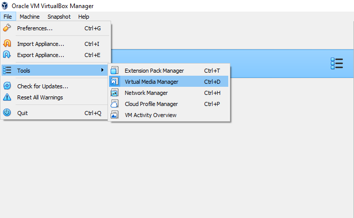
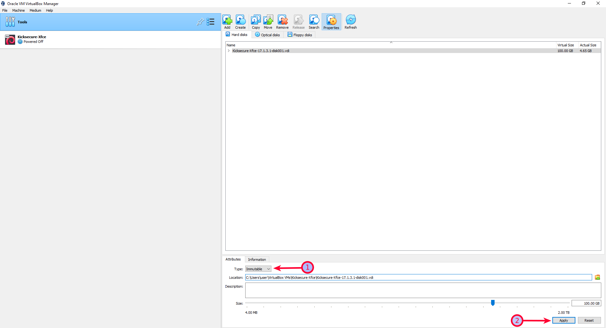

We believe security software like Kicksecure needs to remain Open Source and independent. Would you help sustain and grow the project? Learn more about our 14 year success story and maybe DONATE!
Anti-Forensics
PrecautionsDocumentationWrite
protectionPrevious
page: Anti-Forensics PrecautionsIndex page:
DocumentationNext page: Write
protection
Read-Only: Setting Hard Drives to Read-Only
Depending on the user's use case. Choose one.
- A) ISO users installing Kicksecure: Using the ISO just to install Kicksecure? This does not matter. The user can ignore any live mode related warnings. These are not applicable.
- B) Interested in live mode? See below.
When using live mode (grub-live or ISO Live Mode), no changes are made to the disk. The disk is mounted read-only / immutable.
For added security, consider setting your hard disk to read-only mode, if possible.
Sometimes it is possible to optionally set the hard drives to read-only, enabling a type of write protection. This increases the security of live mode because otherwise malware running as root could theoretically mount the image read-write and gain persistence in this way.
Introduction
The emphasis is on if possible.
This is platform-specific.
Unfortunately, read-only mode is not easily available on all platforms.
Write protection can refer to very different security proprieties. See Write Protection.
VMs
VirtualBox
Step-by-step guide on implementing the Immutable Disk Method for Virtual Machine (VM) Live Mode in VirtualBox, focusing on secure, read-only VM configurations.
This option is the official method for setting VMs to read-only in
VirtualBox. It will only work with the grub-live package,
which is installed by default. [1]
1. Make the VirtualBox disk immutable / read-only.
This step is crucial. Otherwise, contents might be recoverable from the host drive. [2]
Follow these steps:
- Power off the VM.
- In the VirtualBox main window, navigate to:
File→Tools→Virtual Media Manager.

- Select the disk to write-protect and release it.
- Then on
Type→set it to Immutable.

- In the VirtualBox main window, navigate to the settings of the VM.
- Under storage, select the top controller and add the existing hard disk there.
2. Launch live-mode.
Follow the documentation on the Live Mode wiki page.
3. Done.
The process of enabling read-only mode has been completed.
KVM
1. Set the VM disks to read-only.
Follow these steps:
- Power off the machine.
- Set the hard disk to read-only in the virt-manager GUI before booting into live mode.
2. Launch live-mode.
Follow the documentation on the Live Mode wiki page.
3. Optional: Revert the read-only change.
To boot into normal mode again, revert the change from step 1 and choose the normal boot option in the GRUB menu.
4. Done.
The process of enabling read-only mode has been completed.
Qubes
grub-live is currently unsupported on Qubes. [3] This issue is unspecific to Kicksecure. Qubes
issue: implement
live boot by porting grub-live to Qubes - amnesia / non-persistent boot
/ anti-forensics
In Qubes, Disposables are a suitable alternative.
Host Operating System
This would require a hard drive that comes with a physical read-only switch.
This is undocumented and unspecific to Kicksecure.
Comparison with Tails
Comparison between grub-live and Tails
Alternative Configurations
 Platform specific notice.
Platform specific notice.
- KVM: Skip this section if the KVM Live-mode
- VirtualBox: Skip this section if VirtualBox Live-mode configuration steps above have already been completed.
VirtualBox and KVM: VM Live Mode: Alternative ro-mode-init Configuration
Footnotes
- ↑ This option will not work with the
ro-mode-initpackage. - ↑ VirtualBox implements hard disk write protection differently. If an immutable virtual machine is booted, VirtualBox will always create a snapshot where data is written. After shutting down and booting the VM again (a soft reboot is inadequate), the old snapshot will be deleted and a new one created. Consequently, data will not persist in the VM, even if Live-mode is not selected. However, since the data is written to the hard disk of the host (instead of memory), it is easily recoverable. Therefore, selecting Live-mode is essential for safety. A snapshot file is still created, but it will not store any altered content from the VM.
- ↑ Nothing came out from forum discussion.
Categories: Documentation